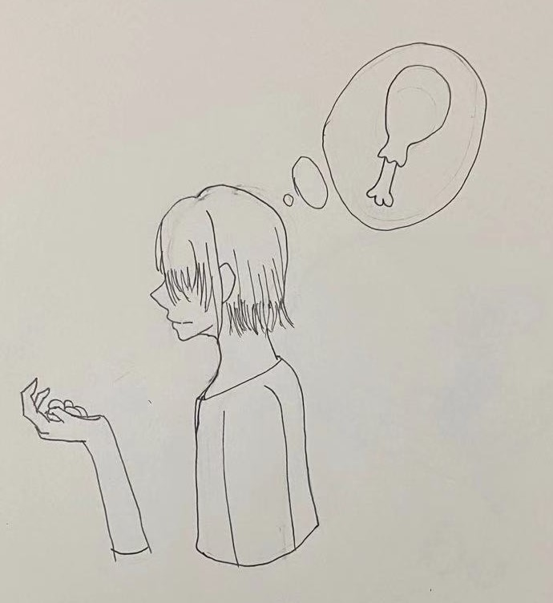

Kevin's decision to moving forward, he believes he can find the tree that he finishes the lunch with his parent. After he leaves away from the river, he is moving for half of the hours. Now, he can't find back the river, because he turns so much side and he forgets it. he feels a little bit hungry, he didn't eat enough when lunchtime. at the time, he finds out that having grass, the grass has some fruit that he doesn't know.
